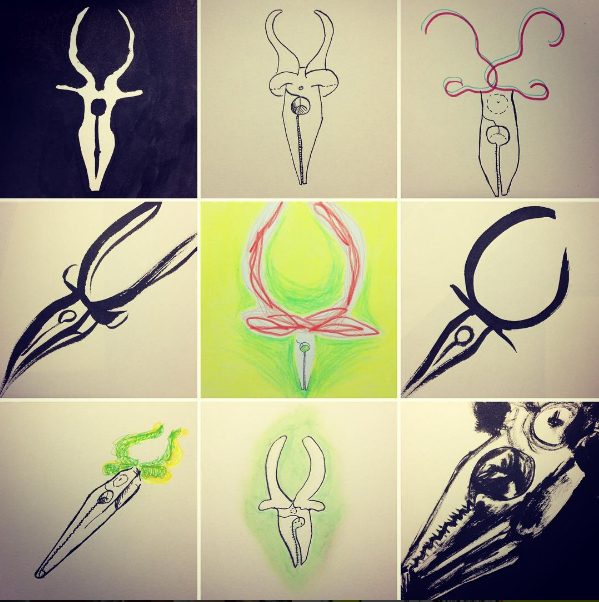
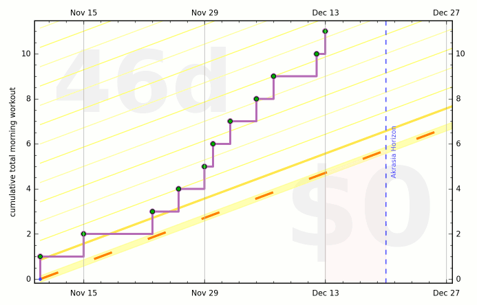

Curriculum
If nothing else, today I am going to have productive afternoon call. I am going to do this by adding in summaries of readings then describing completed analyses then summarizing afternoon discussion. If I do this and only this, 14.12.2016 will be a good day.
Art of Programming (-1 days)
Learning Goal: Overview of approaches to debugging
- Reading: The Developer's Guide to Debugging (2nd ed), by Groetker, Holtmann, Keding, Wloka
- Reading: Code Smells
- Reading K? Software Tools
Video Game Character Design (-1 days)
- Opposites Attract "In this assignment I'd like you to expand on the previous assignment and try drawing two characters for a possible game. Maybe one is a hero and another is a villain. One could be a boss and another could be an underling. The challenge will be to give each character a clearly different design. As an example, think of Andy's approach with his softer, rounder explorer and his harsher, sharper aliens. Or pair a mechanical style on one character with a more organic look for another character. Or a rustic approach on one character could contrast with a more modern approach on another character. ... Does each character have a different approach to their design? For example, do the characters vary in shape, pose, expression, proportion, mood, etc.?"
- Review peer submissions

Fundamentals of Graphic Design (-1 days)
- Take best physical images, "scan" them, get them into the Surface and make some digital recombinations as well as notmal ones. Submit them
- Review 2 others' assignments
Fundamentals of Music Theory (-1 days)
- Quiz
Script Writing (-1 days)
- Episode pitch
- Act 1 outline
- Act 1 draft
- Episode pitch - peer review
- Act 1 outline - peer review
- Act 1 draft - peer review
Improving your statistical inferences (-1 days)
- Either set up R studio or - better! - check out this iPy tutorial using scipy
- Quiz
The Blues: Understanding and Performing an American Art Form (-1 days)
- Quiz

Establishing a Sustainable Health Pattern (0 days)
Learning Goal: continue to cultivate a pattern of short regular sessions
- One evening DailyYoga session
- Bouldering or a long-ish bike ride
- Formal meditation